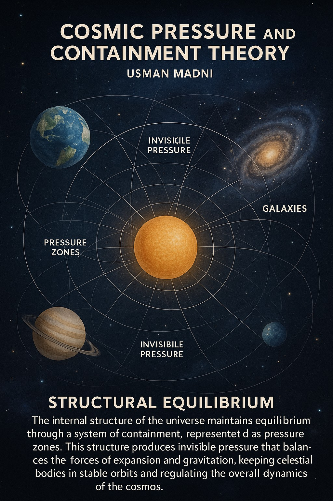
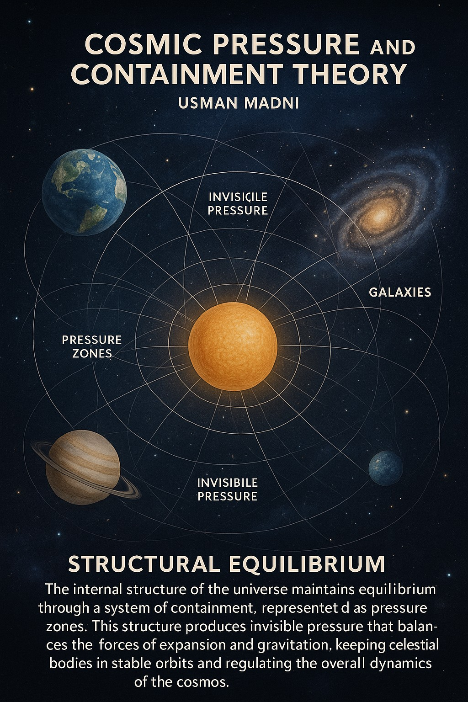

الملخص
يقدم هذا المقال نظرية "الضغط والاحتواء الكوني" (CPC) التي تستند إلى فكرة أن الكون يحافظ على هيكله من خلال توازن بين الضغط الداخلي وقوة الاحتواء الخارجي. تتحدى هذه النظرية نموذج الجاذبية الوحيد في تفسير تمدد الكون، حركة المجرات، وسلوك الضوء بناءً على الضغط.
١. المقدمة
في علم الكون الحديث، تُفسّر البنية والحركة الكونية عموماً بواسطة قوانين الجاذبية التي تخضع للنظرية النسبية العامة. ومع ذلك، فإن الحقائق المرصودة مثل التوسع المتسارع، أنماط دوران المجرات، واستقرار البنى الكونية الكبيرة، تستدعي نظريات بديلة. تقترح نظرية CPC أن الضغط الكوني، الذي يتوازن مع قوة الاحتواء الخارجي، يتحكم في استقرار الكون ويقدم زاوية نظر جديدة.
٢. عشرة أدلة علمية تؤيد نظرية CPC
- التوسع المستمر للكون
- استقرار التوازن الكوني
- استقرار الثقوب السوداء والنجوم النيوترونية
- تماثل إشعاع الخلفية الكونية
- عدم التوازن بين المادة والمضادة للمادة
- ضغط الفراغ الكمومي
- قصور نظريات الجاذبية
- حدود الكون
- التشبيه المعماري
- أنظمة الضغط في الطبيعة
٣. انفجار الكون - نهاية نظرية
إذا زاد الضغط الداخلي عن الحد الذي يستطيع الاحتواء الخارجي تحمله، قد ينفجر الكون، مما يؤدي إلى تدمير جميع المجرات والمادة.
٤. التأثير الأول - رد فعل البحار
بما أن الماء غير قابل للانضغاط، فإن المحيطات على الأرض ستكون أول من يشعر بشدة هذا الانفجار، وتأثيره سيكون هائلاً.
٥. تعليق الأجسام في الفضاء
وفقاً لنظرية CPC، الأجسام لا تبقى معلقة في الفضاء فقط بسبب الجاذبية، بل بسبب توازن قوى الضغط.
٦. تأثير الضغط على الضوء
سرعة واتجاه الضوء قد تتأثر بالضغط، مما يقدم تفسيرات جديدة لظواهر مثل الانزياح الأحمر والعدسات الجاذبية.
٧. المعادلات النظرية
التوازن: Pi × A = Fc × A ⇒ Pi = Fc
الضغط المداري: Pr(r) = P₀ / (1 + k r²)
الانزياح الأحمر بسبب تدرج الضغط: Δλ ∝ ∇P · d
٨. قصور النظريات الحالية
- النسبية العامة: لا تشرح التوسع بدون طاقة مظلمة
- الجاذبية النيوتونية: تفشل على النطاق الكوني وتتجاهل الضغط
- نماذج الطاقة المظلمة: تعتمد على فرضيات غير مرئية
- نظرية الأوتار: معقدة ولا تملك أدلة تجريبية
٩. مزايا نظرية CPC
- تفسير التوسع دون الحاجة لطاقة مظلمة
- خالية من التفردات
- تشابه مع الطبيعة (الفقاعات، المحيطات، الدماغ...)
١٠. الخاتمة
تقدم نظرية الضغط والاحتواء الكوني نموذجاً جديداً لفهم تركيب وحركة الكون يعتمد على الضغط، متفادياً أوجه القصور في نماذج الجاذبية التقليدية.
١١. المراجع
- Misner, Thorne & Wheeler. (1973). *Gravitation.*
- Padmanabhan. (1993). *Structure Formation in the Universe.*
- Peebles. (1993). *Principles of Physical Cosmology.*
- Riess et al. (1998). *Supernovae & Accelerating Universe.*
- Verlinde. (2017). *Emergent Gravity.*
- Zee. (2010). *Quantum Field Theory in a Nutshell.*
- Weinberg. (1972). *Gravitation and Cosmology.*
١٢. الصور التوضيحية


 

© 2025 عثمان مدني — جميع الحقوق محفوظة